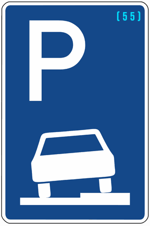

Zeichen 315
Parken auf Gehwegen

66 Tatbestände dazu
112484Sie parkten bei zulässigem Gehwegparken (Zeichen 315) nicht auf dem rechten Gehweg.
55 €
112494
Sie parkten bei zulässigem Gehwegparken (Zeichen 315) in der Einbahnstraße nicht auf dem Gehweg.
55 €
112685
Sie parkten bei zulässigem Gehwegparken (Zeichen 315) nicht auf dem rechten Gehweg und behinderten +) dadurch Andere.
70 €1 PunktB-Verstoß
112686
Sie parkten länger als 1 Stunde bei zulässigem Gehwegparken (Zeichen 315) nicht auf dem rechten Gehweg.
70 €1 PunktB-Verstoß
112687
Sie parkten länger als 1 Stunde bei zulässigem Gehwegparken (Zeichen 315) nicht auf dem rechten Gehweg und behinderten +) dadurch Andere.
80 €1 PunktB-Verstoß
112688
Sie parkten bei zulässigem Gehwegparken (Zeichen 315) nicht auf dem rechten Gehweg und gefährdeten +) dadurch Andere.
80 €1 PunktB-Verstoß
112689
Sie parkten bei zulässigem Gehwegparken (Zeichen 315) nicht auf dem rechten Gehweg. Es kam zum Unfall.
100 €1 PunktB-Verstoß
112695
Sie parkten bei zulässigem Gehwegparken (Zeichen 315) in der Einbahnstraße nicht auf dem Gehweg und behinderten +) dadurch Andere.
70 €1 PunktB-Verstoß
112696
Sie parkten länger als 1 Stunde bei zulässigem Gehwegparken (Zeichen 315) in der Einbahnstraße nicht auf dem Gehweg.
70 €1 PunktB-Verstoß
112697
Sie parkten länger als 1 Stunde bei zulässigem Gehwegparken (Zeichen 315) in der Einbahnstraße nicht auf dem Gehweg und behinderten +) dadurch Andere.
80 €1 PunktB-Verstoß
112698
Sie parkten bei zulässigem Gehwegparken (Zeichen 315) in der Einbahnstraße nicht auf dem Gehweg und gefährdeten +) dadurch Andere.
80 €1 PunktB-Verstoß
112699
Sie parkten bei zulässigem Gehwegparken (Zeichen 315) in der Einbahnstraße nicht auf dem Gehweg. Es kam zum Unfall.
100 €1 PunktB-Verstoß
113280
Sie überschritten bei Zeichen <314/315> mit Zusatzzeichen die zulässige Höchstparkdauer.
20 €
113281
Sie überschritten bei Zeichen <314/315> mit Zusatzzeichen die zulässige Höchstparkdauer - länger als 30 Minuten.
25 €
113282
Sie überschritten bei Zeichen <314/315> mit Zusatzzeichen die zulässige Höchstparkdauer - länger als 1 Stunde.
30 €
113283
Sie überschritten bei Zeichen <314/315> mit Zusatzzeichen die zulässige Höchstparkdauer - länger als 2 Stunden.
35 €
113284
Sie überschritten bei Zeichen <314/315> mit Zusatzzeichen die zulässige Höchstparkdauer - länger als 3 Stunden.
40 €
113300
Sie parkten bei Zeichen <314/315>, ohne die durch Zusatzzeichen vorgeschriebene Parkscheibe (Bild 318) von außen gut lesbar im oder am Fahrzeug angebracht zu haben.
20 €
113301
Sie parkten bei Zeichen <314/315>, ohne die durch Zusatzzeichen vorgeschriebene Parkscheibe (Bild 318) von außen gut lesbar im oder am Fahrzeug angebracht zu haben - länger als 30 Minuten.
25 €
113302
Sie parkten bei Zeichen <314/315>, ohne die durch Zusatzzeichen vorgeschriebene Parkscheibe (Bild 318) von außen gut lesbar im oder am Fahrzeug angebracht zu haben - länger als 1 Stunde.
30 €
113303
Sie parkten bei Zeichen <314/315>, ohne die durch Zusatzzeichen vorgeschriebene Parkscheibe (Bild 318) von außen gut lesbar im oder am Fahrzeug angebracht zu haben - länger als 2 Stunden.
35 €
113304
Sie parkten bei Zeichen <314/315>, ohne die durch Zusatzzeichen vorgeschriebene Parkscheibe (Bild 318) von außen gut lesbar im oder am Fahrzeug angebracht zu haben - länger als 3 Stunden.
40 €
113320
Sie parkten bei Zeichen <314/315>, ohne die durch Zusatzzeichen vorgeschriebene Parkscheibe (Bild 318) richtig eingestellt zu haben.
20 €
113321
Sie parkten bei Zeichen <314/315>, ohne die durch Zusatzzeichen vorgeschriebene Parkscheibe (Bild 318) richtig eingestellt zu haben - länger als 30 Minuten.
25 €
113322
Sie parkten bei Zeichen <314/315>, ohne die durch Zusatzzeichen vorgeschriebene Parkscheibe (Bild 318) richtig eingestellt zu haben - länger als 1 Stunde.
30 €
113323
Sie parkten bei Zeichen <314/315>, ohne die durch Zusatzzeichen vorgeschriebene Parkscheibe (Bild 318) richtig eingestellt zu haben - länger als 2 Stunden.
35 €
113324
Sie parkten bei Zeichen <314/315>, ohne die durch Zusatzzeichen vorgeschriebene Parkscheibe (Bild 318) richtig eingestellt zu haben - länger als 3 Stunden.
40 €
142202
Sie parkten bei Zeichen 315 auf dem Gehweg, obwohl dies durch Zusatzzeichen *) für Sie verboten war.
10 €
142203
Sie parkten bei Zeichen 315 auf dem Gehweg, obwohl dies durch Zusatzzeichen *) für Sie verboten war, und behinderten +) dadurch Andere.
15 €
142204
Sie parkten bei Zeichen 315 länger als 3 Stunden auf dem Gehweg, obwohl dies durch Zusatzzeichen *) für Sie verboten war.
20 €
142205
Sie parkten bei Zeichen 315 länger als 3 Stunden auf dem Gehweg, obwohl dies durch Zusatzzeichen *) für Sie verboten war, und behinderten +) dadurch Andere.
30 €
142212
Sie parkten auf einem Gehweg, der durch Zeichen 315 für Fahrzeuge bis zu 2,8 t zum Gehwegparken freigegeben war, obwohl Ihr Fahrzeug mehr als 2,8 t zulässige Gesamtmasse hat.
10 €
142213
Sie parkten auf einem Gehweg, der durch Zeichen 315 für Fahrzeuge bis zu 2,8 t zum Gehwegparken freigegeben war, obwohl Ihr Fahrzeug mehr als 2,8 t zulässige Gesamtmasse hat, und behinderten +) dadurch Andere.
15 €
142214
Sie parkten länger als 3 Stunden auf einem Gehweg, der durch Zeichen 315 für Fahrzeuge bis zu 2,8 t zum Gehwegparken freigegeben war, obwohl Ihr Fahrzeug mehr als 2,8 t zulässige Gesamtmasse hat.
20 €
142215
Sie parkten länger als 3 Stunden auf einem Gehweg, der durch Zeichen 315 für Fahrzeuge bis zu 2,8 t zum Gehwegparken freigegeben war, obwohl Ihr Fahrzeug mehr als 2,8 t zulässige Gesamtmasse hat, und behinderten +) dadurch Andere.
30 €
142222
Sie parkten auf einem Gehweg entgegen der durch Zeichen 315 vorgeschriebenen Aufstellungsart.
10 €
142223
Sie parkten auf einem Gehweg entgegen der durch Zeichen 315 vorgeschriebenen Aufstellungsart und behinderten +) dadurch Andere.
15 €
142224
Sie parkten länger als 3 Stunden auf einem Gehweg entgegen der durch Zeichen 315 vorgeschriebenen Aufstellungsart.
20 €
142225
Sie parkten länger als 3 Stunden auf einem Gehweg entgegen der durch Zeichen 315 vorgeschriebenen Aufstellungsart und behinderten +) dadurch Andere.
30 €
142232
Sie parkten auf dem Gehweg, auf dem das Parken durch Zeichen 315 zugelassen war, über die auf dem Zusatzzeichen angegebene Zeit hinaus.
10 €
142233
Sie parkten auf dem Gehweg, auf dem das Parken durch Zeichen 315 zugelassen war, über die auf dem Zusatzzeichen angegebene Zeit hinaus und behinderten +) dadurch Andere.
15 €
142234
Sie parkten länger als 3 Stunden auf dem Gehweg, auf dem das Parken durch Zeichen 315 zugelassen war, über die auf dem Zusatzzeichen angegebene Zeit hinaus.
20 €
142235
Sie parkten länger als 3 Stunden auf dem Gehweg, auf dem das Parken durch Zeichen 315 zugelassen war, über die auf dem Zusatzzeichen angegebene Zeit hinaus und behinderten +) dadurch Andere.
30 €
142252
Sie parkten auf einem Sonderparkplatz für Bewohner (Zeichen <314/315>) mit Zusatzzeichen für Bewohner mit besonderem Parkausweis. Ein besonderer Parkausweis lag nicht gut lesbar aus.
10 €
142253
Sie parkten auf einem Sonderparkplatz für Bewohner (Zeichen <314/315>) mit Zusatzzeichen für Bewohner mit besonderem Parkausweis und behinderten +) dadurch Andere. Ein besonderer Parkausweis lag nicht gut lesbar aus.
15 €
142254
Sie parkten länger als 3 Stunden auf einem Sonderparkplatz für Bewohner (Zeichen <314/315>) mit Zusatzzeichen für Bewohner mit besonderem Parkausweis. Ein besonderer Parkausweis lag nicht gut lesbar aus.
20 €
142255
Sie parkten länger als 3 Stunden auf einem Sonderparkplatz für Bewohner (Zeichen <314/315>) mit Zusatzzeichen für Bewohner mit besonderem Parkausweis und behinderten +) dadurch Andere. Ein besonderer Parkausweis lag nicht gut lesbar aus.
30 €
142278
Sie parkten auf einem Sonderparkplatz für Schwerbehinderte mit außergewöhnlicher Gehbehinderung, beidseitiger Amelie oder Phokomelie, mit vergleichbaren Funktionseinschränkungen sowie für blinde Menschen (Zeichen <314/315> und Zusatzzeichen mit Rollstuhlfahrersinnbild). Ein besonderer Parkausweis lag nicht gut lesbar aus.
55 €
142284
Sie parkten unberechtigt auf einem Parkplatz für elektrisch betriebene Fahrzeuge (Zeichen <314/315>) mit Zusatzzeichen.
55 €
142290
Sie parkten unberechtigt auf einem Parkplatz für Carsharingfahrzeuge (Zeichen <314/315>) mit Zusatzzeichen. Eine Carsharingplakette war nicht deutlich sichtbar angebracht.
55 €
424601
Sie führten das Kraftfahrzeug mit einer Atemalkoholkonzentration von 0,25 mg/l oder mehr. Die festgestellte Atemalkoholkonzentration betrug (X) mg/l. - bei Eintragung von bereits einer Entscheidung nach § 24a StVG, §§ 316 oder 315c Abs. 1 Nr. 1 Bstb. a StGB im FAER.
1000 €2 PunkteFahrverbot 3 Monat(e)A-Verstoß
424602
Sie führten das Kraftfahrzeug mit einer Atemalkoholkonzentration von 0,25 mg/l oder mehr. Die festgestellte Atemalkoholkonzentration betrug (X) mg/l. - bei Eintragung von bereits mehreren Entscheidungen nach § 24a StVG, §§ 316 oder 315c Abs. 1 Nr. 1 Bstb. a StGB im FAER.
1500 €2 PunkteFahrverbot 3 Monat(e)A-Verstoß
424607
Sie führten das Kraftfahrzeug mit einer Blutalkoholkonzentration von 0,5 Promille oder mehr. Die festgestellte Blutalkoholkonzentration betrug (X) Promille. - bei Eintragung von bereits einer Entscheidung nach § 24a StVG, §§ 316 oder 315c Abs. 1 Nr. 1 Bstb. a StGB im FAER.
1000 €2 PunkteFahrverbot 3 Monat(e)A-Verstoß
424608
Sie führten das Kraftfahrzeug mit einer Blutalkoholkonzentration von 0,5 Promille oder mehr. Die festgestellte Blutalkoholkonzentration betrug (X) Promille. - bei Eintragung von bereits mehreren Entscheidungen nach § 24a StVG, §§ 316 oder 315c Abs. 1 Nr. 1 Bstb. a StGB im FAER.
1500 €2 PunkteFahrverbot 3 Monat(e)A-Verstoß
424613
Sie führten das Kraftfahrzeug mit einer Alkoholmenge im Körper, die zu einer Atemalkoholkonzentration von 0,25 mg/l oder mehr geführt hat. Die festgestellte Atemalkoholkonzentration betrug (X) mg/l. - bei Eintragung von bereits einer Entscheidung nach § 24a StVG, §§ 316 oder 315c Abs. 1 Nr. 1 Bstb. A StGB im FAER.
1000 €2 PunkteFahrverbot 3 Monat(e)A-Verstoß
424614
Sie führten das Kraftfahrzeug mit einer Alkoholmenge im Körper, die zu einer Atemalkoholkonzentration von 0,25 mg/l oder mehr geführt hat. Die festgestellte Atemalkoholkonzentration betrug (X) mg/l. - bei Eintragung von bereits mehreren Entscheidungen nach § 24a StVG, §§ 316 oder 315c Abs. 1 Nr. 1 Bstb. a StGB im FAER.
1500 €2 PunkteFahrverbot 3 Monat(e)A-Verstoß
424619
Sie führten das Kraftfahrzeug mit einer Alkoholmenge im Körper, die zu einer Blutalkoholkonzentration von 0,5 Promille oder mehr geführt hat. Die festgestellte Blutalkoholkonzentration betrug (X) Promille. - bei Eintragung von bereits einer Entscheidung nach § 24a StVG, §§ 316 oder 315c Abs. 1 Nr. 1 Bstb. a StGB im FAER.
1000 €2 PunkteFahrverbot 3 Monat(e)A-Verstoß
424620
Sie führten das Kraftfahrzeug mit einer Alkoholmenge im Körper, die zu einer Blutalkoholkonzentration von 0,5 Promille oder mehr geführt hat. Die festgestellte Blutalkoholkonzentration betrug (X) Promille. - bei Eintragung von bereits mehreren Entscheidungen nach § 24a StVG, §§ 316 oder 315c Abs. 1 Nr. 1 Bstb. a StGB im FAER.
1500 €2 PunkteFahrverbot 3 Monat(e)A-Verstoß
424631
Sie führten das Kraftfahrzeug mit 3,5 ng/ml oder mehr Tetrahydrocannabinol im Blutserum. - bei Eintragung von bereits einer Entscheidung nach § 24 a StVG, §§ 316 oder 315c Abs. 1 Nr. 1 Bstb. a StGB im FAER.
1000 €2 PunkteFahrverbot 3 Monat(e)A-Verstoß
424632
Sie führten das Kraftfahrzeug mit 3,5 ng/ml oder mehr Tetrahydrocannabinol im Blutserum. - bei Eintragung von bereits mehreren Entscheidungen nach § 24 a StVG, §§ 316 oder 315c Abs. 1 Nr. 1 Bstb. a StGB im FAER.
1500 €2 PunkteFahrverbot 3 Monat(e)A-Verstoß
424649
Sie führten das Kraftfahrzeug unter Wirkung des berauschenden Mittels *). - bei Eintragung von bereits einer Entscheidung nach § 24a StVG, §§ 316 oder 315c Abs. 1 Nr. 1 Bstb. a StGB im FAER.
1000 €2 PunkteFahrverbot 3 Monat(e)A-Verstoß
424650
Sie führten das Kraftfahrzeug unter Wirkung des berauschenden Mittels *). - bei Eintragung von bereits mehreren Entscheidungen nach § 24a StVG, §§ 316 oder 315c Abs. 1 Nr. 1 Bstb. a StGB im FAER.
1500 €2 PunkteFahrverbot 3 Monat(e)A-Verstoß
424673
Sie führten das Kraftfahrzeug mit 3,5 ng/ml oder mehr Tetrahydrocannabinol im Blutserum und haben ein alkoholisches Getränk zu sich genommen. - bei Eintragung von bereits einer Entscheidung nach § 24a StVG, §§ 316 oder 315c Abs. 1 Nr. 1 Bstb. a StGB im FAER.
1500 €2 PunkteFahrverbot 3 Monat(e)A-Verstoß
424674
Sie führten das Kraftfahrzeug mit 3,5 ng/ml oder mehr Tetrahydrocannabinol im Blutserum und haben ein alkoholisches Getränk zu sich genommen. - bei Eintragung von bereits mehreren Entscheidungen nach § 24a StVG, §§ 316 oder 315c Abs. 1 Nr. 1 Bstb. a StGB im FAER.
2000 €2 PunkteFahrverbot 3 Monat(e)A-Verstoß
424675
Sie führten das Kraftfahrzeug mit 3,5 ng/ml oder mehr Tetrahydrocannabinol im Blutserum und haben unter der Wirkung eines alkoholischen Getränks die Fahrt angetreten. - bei Eintragung von bereits einer Entscheidung nach § 24a, §§ 316 oder 315c Abs.1 Nr. 1 Bstb. a StGB im FAER.
1500 €2 PunkteFahrverbot 3 Monat(e)A-Verstoß
424676
Sie führten das Kraftfahrzeug mit 3,5 ng/ml oder mehr Tetrahydrocannabinol im Blutserum und haben unter der Wirkung eines alkoholischen Getränks die Fahrt angetreten. - bei Eintragung von bereits mehreren Entscheidungen nach § 24a StVG, §§ 316 oder 315c Abs. 1 Nr. 1 Bstb. a StGB im FAER.
2000 €2 PunkteFahrverbot 3 Monat(e)A-Verstoß